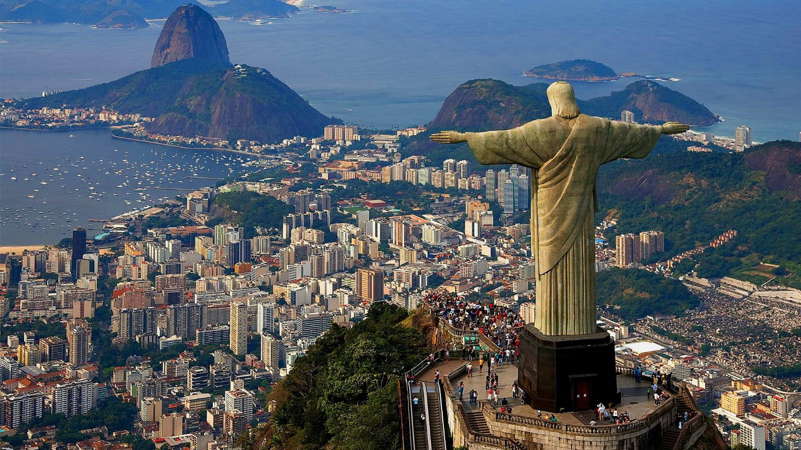
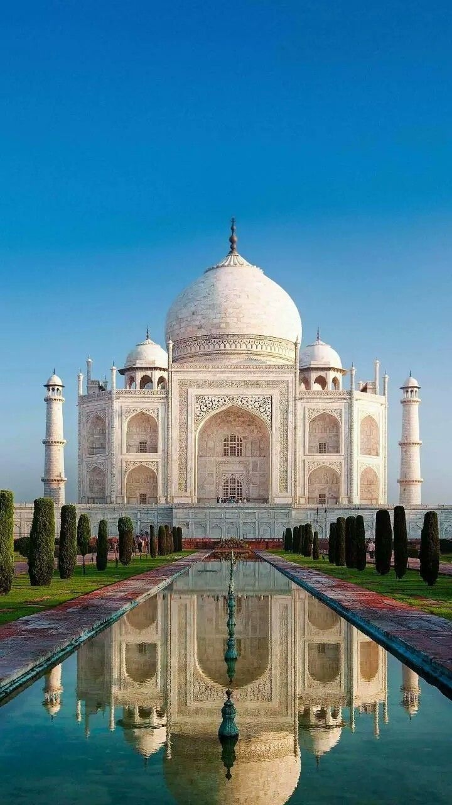
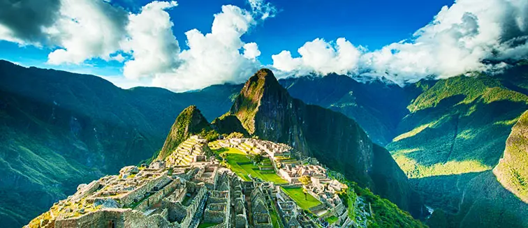
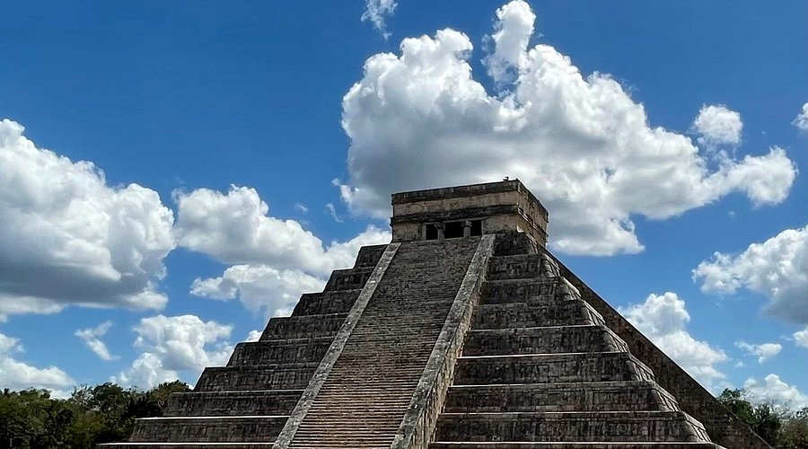
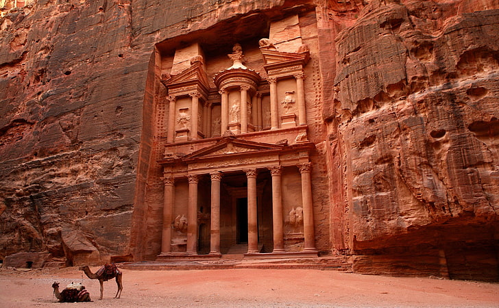
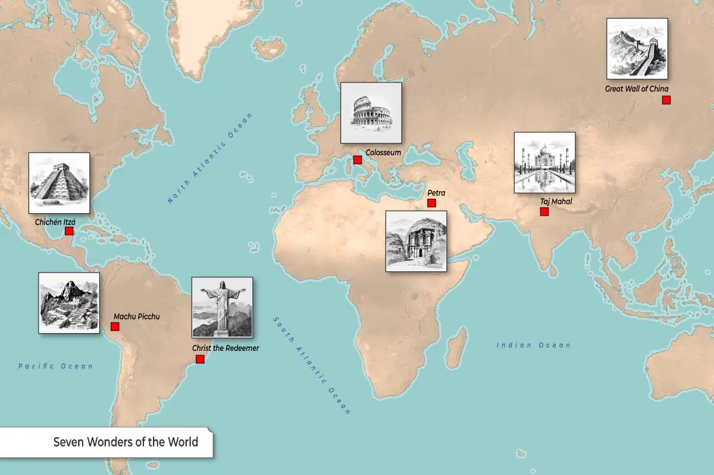

1. The Colosseum,Rome,Italy

The Colosseum is the great oval amphitheater in the center of Rome where gladiators once fought for their lives. The largest amphitheater ever built, it was constructed from sand and stone over eight years, from 72 to 80 CE. The colossal structure could hold 80,000 spectators, arranged in a circular ring around the central stage. Dramatic and sometimes horrifying events took place here, not just gladiatorial games but also Classical plays, animal hunts, and executions. Some say water was even pumped into the arena to enact mock sea battles. Partially damaged by earthquakes and stone robbers over the centuries, the Colosseum is still an iconic memento of Roman history, visited by thousands of tourists every year, so it stands to reason it would make the list of today’s seven wonders of the world.
2.The Great Wall of chaina
The great wall of chaina is a huge barrier that spans thousands of miles along China’s historic northern border. Created over millennia, the wall began its life as a series of smaller walls dating back to the 7th century BCE, built as protective barriers against nomadic raids. In 220 BCE, China’s first Emperor, Qin Shi Huang masterminded the unification of all China’s walls into one almighty barrier, strengthening and extending the wall to keep out northern invaders. Today, the wall is recognized as one of the seven wonders, which, including all its branches, measures a whopping 13,171 miles.
3.Christ the Redeemer, Brazil
The totemic statue of Christ the Redeemer stands over Rio de Janeiro on the top of Mount Corcovado. At 30 meters tall, this monument is an iconic emblem of Brazil. This huge public artwork was designed by the Polish-French sculptor Paul Landowski in the 1920s and completed by Brazilian engineer Heitor da Silva Costa and French engineer Albert Caquot in 1931. Made from reinforced concrete clad in over 6 million soapstone tiles, Christ the Redeemer is the largest Art Deco sculpture in the world. Built just after the end of the First World War, the sculpture was an overpowering symbol of Christianity and hope when the world had been brought to its knees, so it is no surprise that this monument made the list of today’s seven wonders.
4.The Taj Mahal, India
India’s renowned Taj Mahal (Persian for Crown of Palaces) is the stunning white marble mausoleum on the bank of the Yamuna River in the city of Agra, and it has been selected as one of the seven wonders of the world. Mughal emperor Shah Jahan built the temple as a tomb for his beloved wife, Mumtaz Mahal, who died during childbirth in 1631. A marble tomb in the center is surrounded by 42 acres of grounds, where gardens, a mosque, a guest house, and a pool complete the complex. The entire project took over 22 years to complete by 20,000 workers at a cost of 32 million rupees (around US$827 million by today’s standards). But the hard work paid off – today, the Taj Mahal is recognized as a UNESCO World Heritage Site and a vital component of India’s rich Mughal history.
5.Machu Picchu, Peru
Machu Picchu is a lost treasure of the 15th century, a rare citadel discovered high in the Andes mountains above the Peruvian Sacred Valley. Astonishingly, it is one of the only pre-Columbian ruins found nearly intact, featuring evidence of former plazas, temples, agricultural terraces and homes. Archaeologists believe the citadel was built as an estate for the Inca emperor Pachacuti in around 1450 in polished drystone walls. The Incas abandoned the site a century later and it remained hidden for millennia before being brought to public attention by American historian Hiram Bingham in 1911. Because of this remarkable preservation, it is recognized today as one of the seven wonders.
6.Chichén Itzá, Mexico
Deep in the Mexican state of Yucatán lies Chichen Itza, a historic Mayan city built between the 9th and 12th centuries. Constructed by the pre-Columbian Mayan tribe Itzá, the city includes a series of monuments and temples. The most celebrated is El Castillo, also known as the Temple of Kukulcan. It is a huge step pyramid in the center of the city which was built as a devotional temple to the god Kukulkan. In total, the entire temple features 365 steps, one for each day of the year. Even more impressively, during the spring and summer equinoxes, the afternoon sun casts triangular shadows down the pyramid’s north stairway that resemble a feathered serpent slithering down its surface, heading towards a stone snake head at the base – no wonder it is one of the seven wonders today!
7. Petra, Jordan
Petra , the ancient city in southern Jordan, is also known as the ‘rose city’ for its golden hue. It dates as far back as 312 BCE. Set in a remote valley, this ancient city was founded by the Arab Nabataeans, a sophisticated civilization that carved stunning architecture and complex waterways out of surrounding rock faces. The Nabateans also established Petra as a successful trade hub, earning vast wealth and a booming population before being wiped out by earthquakes. Unknown to the Western world for centuries, the city was uncovered in 1812 by Swiss explorer Johann Ludwig Burckhardt. 19th-century poet and scholar John William Burgon described Petra as “a rose-red city half as old as time.”
What Were the Seven Wonders of the Ancient World?
Of course, the impressive research carried out by the New 7 Wonders Foundation would never have happened if it weren’t for the original list of the Seven Wonders of the Ancient World. Ancient travelers of the Hellenistic Era made notes on the incredible architectural achievements they encountered along the way, which they believed represented the pinnacle of human imagination and achievement.